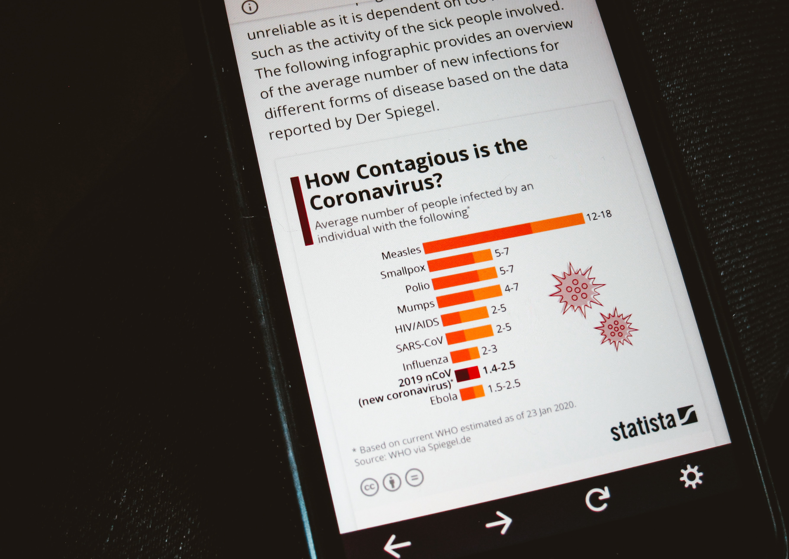

¿Qué es PIS?
La Plataforma de Información de Salud presenta información de fuentes públicas de manera accesible a través de gráficos donde se muestran indicadores y estadísticas, lo que facilita la comprensión de tendencias y patrones en la salud de una población.
¿Para qué es?
Esta plataforma brinda información detallada, limpia y presentable para que los investigadores realicen investigaciones y realicen una toma de decisiones informadas las cuales contribuyan al conocimiento.